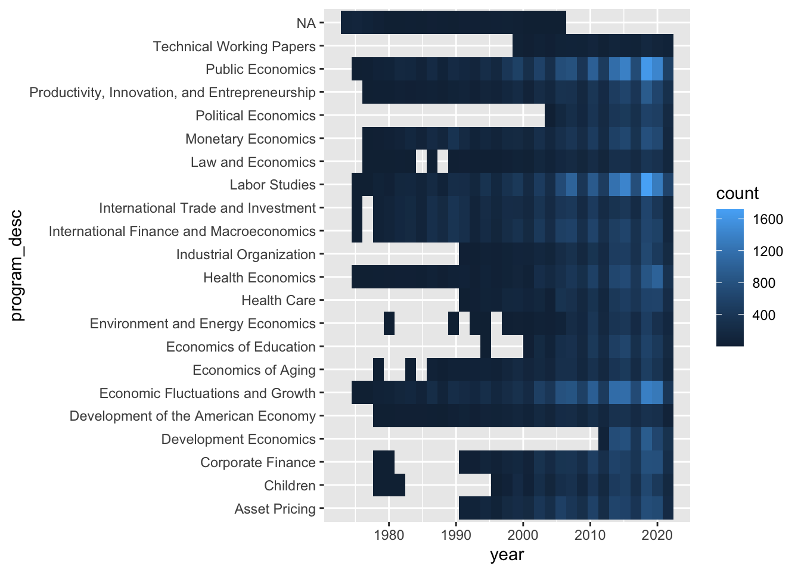
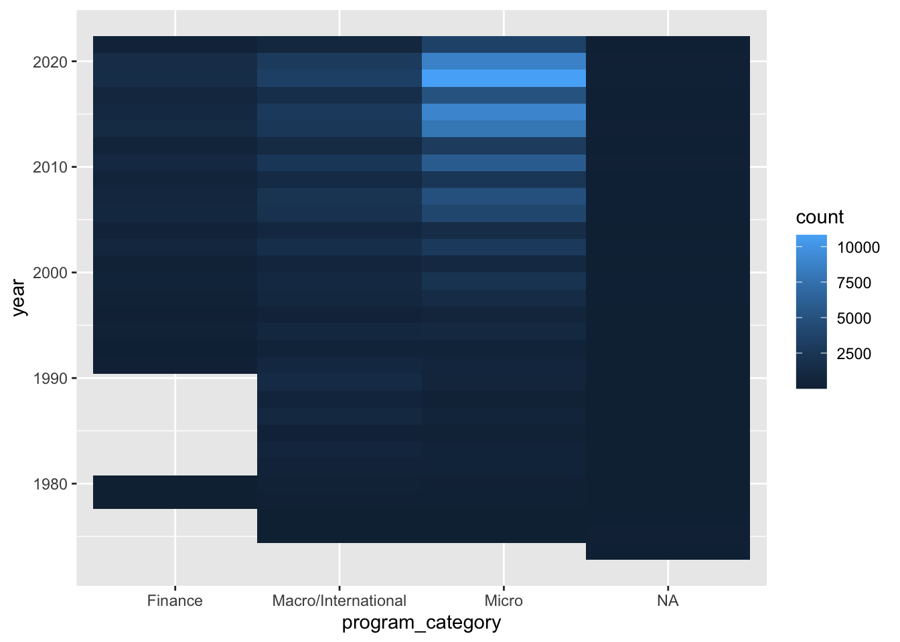
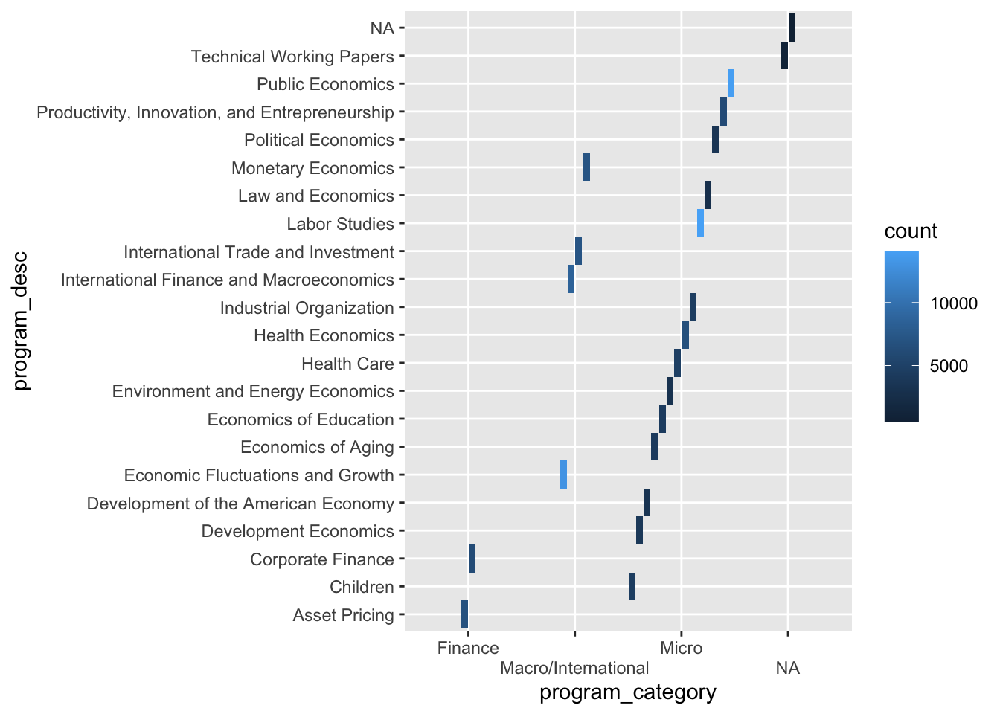

Since this is our first time downloading a tidytuesday dataset, we must first install the packages to allow for downloading of the data… Note that the data this week comes from the National Bureau of Economic Research with the ‘nberwp’ package
install.packages(“tidytuesdayR”)
Note that for data plotting purposes we will also be loading the ggplot2 package
Make sure to install if this is your first time using the package ‘ggplot2’
library(ggplot2)
The data set for this week can be found here: https://github.com/rfordatascience/tidytuesday
Now that we have the package installed we need to load the data for the week…
papers <- readr::read_csv('https://raw.githubusercontent.com/rfordatascience/tidytuesday/master/data/2021/2021-09-28/papers.csv')## Rows: 29434 Columns: 4## ── Column specification ────────────────────────────────────────────────────────
## Delimiter: ","
## chr (2): paper, title
## dbl (2): year, month##
## ℹ Use `spec()` to retrieve the full column specification for this data.
## ℹ Specify the column types or set `show_col_types = FALSE` to quiet this message.authors <- readr::read_csv('https://raw.githubusercontent.com/rfordatascience/tidytuesday/master/data/2021/2021-09-28/authors.csv')## Rows: 15437 Columns: 4## ── Column specification ────────────────────────────────────────────────────────
## Delimiter: ","
## chr (4): author, name, user_nber, user_repec##
## ℹ Use `spec()` to retrieve the full column specification for this data.
## ℹ Specify the column types or set `show_col_types = FALSE` to quiet this message.programs <- readr::read_csv('https://raw.githubusercontent.com/rfordatascience/tidytuesday/master/data/2021/2021-09-28/programs.csv')## Rows: 21 Columns: 3## ── Column specification ────────────────────────────────────────────────────────
## Delimiter: ","
## chr (3): program, program_desc, program_category##
## ℹ Use `spec()` to retrieve the full column specification for this data.
## ℹ Specify the column types or set `show_col_types = FALSE` to quiet this message.paper_authors <- readr::read_csv('https://raw.githubusercontent.com/rfordatascience/tidytuesday/master/data/2021/2021-09-28/paper_authors.csv')## Rows: 67090 Columns: 2## ── Column specification ────────────────────────────────────────────────────────
## Delimiter: ","
## chr (2): paper, author##
## ℹ Use `spec()` to retrieve the full column specification for this data.
## ℹ Specify the column types or set `show_col_types = FALSE` to quiet this message.paper_programs <- readr::read_csv('https://raw.githubusercontent.com/rfordatascience/tidytuesday/master/data/2021/2021-09-28/paper_programs.csv')## Rows: 53996 Columns: 2## ── Column specification ────────────────────────────────────────────────────────
## Delimiter: ","
## chr (2): paper, program##
## ℹ Use `spec()` to retrieve the full column specification for this data.
## ℹ Specify the column types or set `show_col_types = FALSE` to quiet this message.#Next, we will utilize the cleaning script provided at the link above #to combine the data…
library(nberwp)##
## Attaching package: 'nberwp'## The following objects are masked _by_ '.GlobalEnv':
##
## authors, paper_authors, paper_programs, papers, programslibrary(tidyverse)
papers %>%
write_csv("Data/papers.csv")
authors %>%
write_csv("Data/authors.csv")
programs %>%
write_csv("Data/programs.csv")
paper_authors %>%
write_csv("Data/paper_authors.csv")
paper_programs %>%
write_csv("Data/paper_programs.csv")
joined_df <- left_join(papers, paper_authors) %>%
left_join(authors) %>%
left_join(paper_programs) %>%
left_join(programs)%>%
mutate(
catalogue_group = str_sub(paper, 1, 1),
catalogue_group = case_when(
catalogue_group == "h" ~ "Historical",
catalogue_group == "t" ~ "Technical",
catalogue_group == "w" ~ "General"),
.after = paper) ## Joining, by = "paper"## Joining, by = "author"## Joining, by = "paper"## Joining, by = "program"joined_df## # A tibble: 130,081 × 12
## paper catalogue_group year month title author name user_nber user_repec
## <chr> <chr> <dbl> <dbl> <chr> <chr> <chr> <chr> <chr>
## 1 w0001 General 1973 6 Educatio… w0001… Fini… finis_we… <NA>
## 2 w0002 General 1973 6 Hospital… w0002… Barr… barry_ch… pch425
## 3 w0003 General 1973 6 Error Co… w0003… Swar… swarnjit… <NA>
## 4 w0004 General 1973 7 Human Ca… w0004… Lee … <NA> pli669
## 5 w0005 General 1973 7 A Life C… w0005… Jame… james_sm… psm28
## 6 w0006 General 1973 7 A Review… w0006… Vict… victor_z… <NA>
## 7 w0007 General 1973 8 The Defi… w0007… Lewi… <NA> <NA>
## 8 w0008 General 1973 9 Multinat… w0008… Merl… <NA> <NA>
## 9 w0008 General 1973 9 Multinat… w0008… Robe… robert_l… pli259
## 10 w0009 General 1973 9 From Age… w0004… Lee … <NA> pli669
## # … with 130,071 more rows, and 3 more variables: program <chr>,
## # program_desc <chr>, program_category <chr>#Now we will look at the structure of the data and examine it…
str(joined_df)## tibble [130,081 × 12] (S3: tbl_df/tbl/data.frame)
## $ paper : chr [1:130081] "w0001" "w0002" "w0003" "w0004" ...
## $ catalogue_group : chr [1:130081] "General" "General" "General" "General" ...
## $ year : num [1:130081] 1973 1973 1973 1973 1973 ...
## $ month : num [1:130081] 6 6 6 7 7 7 8 9 9 9 ...
## $ title : chr [1:130081] "Education, Information, and Efficiency" "Hospital Utilization: An Analysis of SMSA Differences in Hospital Admission Rates, Occupancy Rates and Bed Rates" "Error Components Regression Models and Their Applications" "Human Capital Life Cycle of Earnings Models: A Specific Solution and Estimation" ...
## $ author : chr [1:130081] "w0001.1" "w0002.1" "w0003.1" "w0004.1" ...
## $ name : chr [1:130081] "Finis Welch" "Barry R Chiswick" "Swarnjit S Arora" "Lee A Lillard" ...
## $ user_nber : chr [1:130081] "finis_welch" "barry_chiswick" "swarnjit_arora" NA ...
## $ user_repec : chr [1:130081] NA "pch425" NA "pli669" ...
## $ program : chr [1:130081] NA NA NA NA ...
## $ program_desc : chr [1:130081] NA NA NA NA ...
## $ program_category: chr [1:130081] NA NA NA NA ...#Now that we have organized the data, we will explore the data by creating a table #that shows the number of each category of paper for each year…
table1 <- table(joined_df$catalogue_group, joined_df$year)
table1##
## 1973 1974 1975 1976 1977 1978 1979 1980 1981 1982 1983
## General 32 58 66 57 94 112 206 408 400 443 435
## Historical 0 0 0 0 0 0 0 0 0 0 0
## Technical 0 0 0 0 0 0 2 9 18 10 25
##
## 1984 1985 1986 1987 1988 1989 1990 1991 1992 1993 1994
## General 542 535 730 815 764 999 889 926 706 857 890
## Historical 0 0 0 0 0 16 11 21 17 18 18
## Technical 19 15 11 2 24 27 15 46 29 32 55
##
## 1995 1996 1997 1998 1999 2000 2001 2002 2003 2004 2005
## General 1097 1151 1275 1260 1655 1897 1993 2463 2636 2926 3187
## Historical 14 36 20 10 8 29 7 0 0 0 0
## Technical 56 40 26 32 21 36 17 27 15 21 36
##
## 2006 2007 2008 2009 2010 2011 2012 2013 2014 2015 2016
## General 3713 4049 3911 4376 4538 5108 4744 5960 5754 6108 6874
## Historical 0 0 0 0 0 0 0 0 0 0 0
## Technical 43 21 0 0 0 0 0 0 0 0 0
##
## 2017 2018 2019 2020 2021
## General 7469 7820 8064 13217 4917
## Historical 0 0 0 0 0
## Technical 0 0 0 0 0#We will create another table that shows the joined program and category #of each paper…
table2 <- table(joined_df$program, joined_df$program_category)
table2##
## Finance Macro/International Micro
## AG 0 0 4237
## AP 6804 0 0
## CF 6153 0 0
## CH 0 0 4502
## DAE 0 0 3370
## DEV 0 0 3849
## ED 0 0 4311
## EEE 0 0 3084
## EFG 0 13113 0
## HC 0 0 4678
## HE 0 0 6671
## IFM 0 8570 0
## IO 0 0 4492
## ITI 0 7125 0
## LE 0 0 2793
## LS 0 0 14084
## ME 0 7121 0
## PE 0 0 13967
## POL 0 0 3557
## PR 0 0 6084
## TWP 0 0 0#Finally, we will make a third table that shows the programs with their #respective descriptions for further clarity…
table3 <- table(joined_df$program, joined_df$program_desc)
table3##
## Asset Pricing Children Corporate Finance Development Economics
## AG 0 0 0 0
## AP 6804 0 0 0
## CF 0 0 6153 0
## CH 0 4502 0 0
## DAE 0 0 0 0
## DEV 0 0 0 3849
## ED 0 0 0 0
## EEE 0 0 0 0
## EFG 0 0 0 0
## HC 0 0 0 0
## HE 0 0 0 0
## IFM 0 0 0 0
## IO 0 0 0 0
## ITI 0 0 0 0
## LE 0 0 0 0
## LS 0 0 0 0
## ME 0 0 0 0
## PE 0 0 0 0
## POL 0 0 0 0
## PR 0 0 0 0
## TWP 0 0 0 0
##
## Development of the American Economy Economic Fluctuations and Growth
## AG 0 0
## AP 0 0
## CF 0 0
## CH 0 0
## DAE 3370 0
## DEV 0 0
## ED 0 0
## EEE 0 0
## EFG 0 13113
## HC 0 0
## HE 0 0
## IFM 0 0
## IO 0 0
## ITI 0 0
## LE 0 0
## LS 0 0
## ME 0 0
## PE 0 0
## POL 0 0
## PR 0 0
## TWP 0 0
##
## Economics of Aging Economics of Education
## AG 4237 0
## AP 0 0
## CF 0 0
## CH 0 0
## DAE 0 0
## DEV 0 0
## ED 0 4311
## EEE 0 0
## EFG 0 0
## HC 0 0
## HE 0 0
## IFM 0 0
## IO 0 0
## ITI 0 0
## LE 0 0
## LS 0 0
## ME 0 0
## PE 0 0
## POL 0 0
## PR 0 0
## TWP 0 0
##
## Environment and Energy Economics Health Care Health Economics
## AG 0 0 0
## AP 0 0 0
## CF 0 0 0
## CH 0 0 0
## DAE 0 0 0
## DEV 0 0 0
## ED 0 0 0
## EEE 3084 0 0
## EFG 0 0 0
## HC 0 4678 0
## HE 0 0 6671
## IFM 0 0 0
## IO 0 0 0
## ITI 0 0 0
## LE 0 0 0
## LS 0 0 0
## ME 0 0 0
## PE 0 0 0
## POL 0 0 0
## PR 0 0 0
## TWP 0 0 0
##
## Industrial Organization International Finance and Macroeconomics
## AG 0 0
## AP 0 0
## CF 0 0
## CH 0 0
## DAE 0 0
## DEV 0 0
## ED 0 0
## EEE 0 0
## EFG 0 0
## HC 0 0
## HE 0 0
## IFM 0 8570
## IO 4492 0
## ITI 0 0
## LE 0 0
## LS 0 0
## ME 0 0
## PE 0 0
## POL 0 0
## PR 0 0
## TWP 0 0
##
## International Trade and Investment Labor Studies Law and Economics
## AG 0 0 0
## AP 0 0 0
## CF 0 0 0
## CH 0 0 0
## DAE 0 0 0
## DEV 0 0 0
## ED 0 0 0
## EEE 0 0 0
## EFG 0 0 0
## HC 0 0 0
## HE 0 0 0
## IFM 0 0 0
## IO 0 0 0
## ITI 7125 0 0
## LE 0 0 2793
## LS 0 14084 0
## ME 0 0 0
## PE 0 0 0
## POL 0 0 0
## PR 0 0 0
## TWP 0 0 0
##
## Monetary Economics Political Economics
## AG 0 0
## AP 0 0
## CF 0 0
## CH 0 0
## DAE 0 0
## DEV 0 0
## ED 0 0
## EEE 0 0
## EFG 0 0
## HC 0 0
## HE 0 0
## IFM 0 0
## IO 0 0
## ITI 0 0
## LE 0 0
## LS 0 0
## ME 7121 0
## PE 0 0
## POL 0 3557
## PR 0 0
## TWP 0 0
##
## Productivity, Innovation, and Entrepreneurship Public Economics
## AG 0 0
## AP 0 0
## CF 0 0
## CH 0 0
## DAE 0 0
## DEV 0 0
## ED 0 0
## EEE 0 0
## EFG 0 0
## HC 0 0
## HE 0 0
## IFM 0 0
## IO 0 0
## ITI 0 0
## LE 0 0
## LS 0 0
## ME 0 0
## PE 0 13967
## POL 0 0
## PR 6084 0
## TWP 0 0
##
## Technical Working Papers
## AG 0
## AP 0
## CF 0
## CH 0
## DAE 0
## DEV 0
## ED 0
## EEE 0
## EFG 0
## HC 0
## HE 0
## IFM 0
## IO 0
## ITI 0
## LE 0
## LS 0
## ME 0
## PE 0
## POL 0
## PR 0
## TWP 986#Now we will perform a simple scatter plot with a line of best fit to determine #if there exists a pattern or trend between several different combinations of #factors
#The first plot shows the distribution of paper topics (descriptions) per year and where they are most concentrated in each area
Year_and_Program <- ggplot(joined_df, aes(year,program_desc))+
geom_bin_2d()
Year_and_Program
#The second plot shows the concentration of each paper category, as can be seen #from the chart, micro has become the most popular category in recent times
Category_and_Year <- ggplot(joined_df, aes(program_category, year))+
geom_bin_2d()
Category_and_Year
#The third plot further illustrates number of papers with each respective #description and category based on a colored count
Plot3 <- ggplot(joined_df, aes(program_category, program_desc))+
geom_bin_2d(position = position_dodge2(preserve = 'single'))+
scale_x_discrete(guide = guide_axis(n.dodge = 2))
Plot3